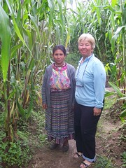
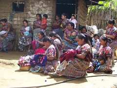

Trip Blog
Drunks in the street

One of the more disturbing things about a couple of the places we've been recently is seeing drunks just laying unconscious on the sidewalk, or even sprawling out into the street. There seems to be no custom of getting them off the street, or having the police come and bundle them off to a detox center. They just collapse and sleep it off right there in front of everybody. One place where we used the internet we regularly had to step over a drunk to walk in the front door. Of course this is ugly. We know that this level drunkenness happens everywhere, but it seems like our custom at home is that it's hidden inside somewhere, or if not the police make sure that it's removed quickly from public view. Sometimes it's so extreme here that we wonder whether it's some kind of an art form. Just how drunk can you get before you have to collapse and start drinking?
This pattern of alcoholism also reminds us of the devastation of alcohol among the indigenous peoples of Alaska and northwest Canada. And these people are from the very same stock. I know that many people have theorized that there's an alcoholism gene that makes native American peoples particularly susceptible to the destruction of alcohol. Perhaps that's what's going on. It certainly is ugly and distressing.
A Weekend Ride to Antigua Guatemala

We had a couple of places in the area we wanted to visit... Well we got a little lost, but it was a beautiful quiet road. There were a lot of people walking or riding their bikes, most with some kind of load. There were two women with babies on their backs carrying cooking wood on their heads, another group of two women with a wheelbarrow pushing a load of wood that got away from them, a horse carrying a huge pile of greens, lots of bikers with various field implements, and just bikers getting to and from town. We finally found our way, but the people we saw along the road were more interesting than the things we'd been looking for.
The ride was wonderful. Downhill and in the country. We got to Antigua Guatemala and now we entered another world, The gringo world in a colonial city in the middle of Guatemala. Antigua is a tourist-ridden, beautiful, romantic city, and we took a very pleasant weekend there.
Fancy bike gear: Sandals

By the way, both of us abandoned fancy clipless pedals and shoes some time ago (like in Victoria, British Columbia). For me, it's just that I want only one pair of shoes, and a clip isn't a very friendly thing on your one pair of shoes. For Nancy, it's that she never does get all that confident about the clipped-in thing. Anyway, we're just normal people with normal shoes these days. Or sandals, that is.
[Postscript: Two days after I wrote this, my sandal broke a strap, the fiend, leaving me with a significant equipment crisis, since these are my only shoes. We pushed a large safety pin in through the side of the sole to try to tack down the strap and I'll see if I can make it to a place where they sell sandals. So much for praising your equipment. It gets you nowhere!]
[Post Postscript: The following day we asked around about how to get my sandal fixed, and were directed to a stall in the market in Chimaltenango. I found the fellow, took off my sandal and showed him what was wrong. He started gluing and sewing, reinforced all the connections on both shoes, made them perfect again, and then didn't want to charge me anything. I finally convinced him to take 10 Quetzals, about US$1.30. What a wonderful thing is the can-do, can-fix attitude in Latin America.]
The amazing wood carriers of Guatemala

This boy said he had only a 1-hour walk with his load, but we know many carry their loads farther. Some are gathering wood for their own use, but many people are also gathering the wood for sale and carrying it many miles, since it's the only way they have to earn a little cash.
Patchwork quilt to honor the dead and disappeared of the civil war

We saw a very moving ceremony in Nebaj the other day where patchwork quilts were laid out in front of the church. Each patch memorialized one of the hundreds and thousands of people who were killed or "disappeared" in that time. Of course the political and emotional implications still remain. The man who was the country's strongman at that time, Efraín Rios Montt, is running for a high position in the government in the upcoming election, even though he's still charged with international war crimes. Nearly everyone in this region lost family members. Many of the women we've interviewed lost their parents in the war. It's striking and moving to be this close to such a life-changing tragedy.
Evangelicals and Catholicism in Guatemala

Now in Guatemala this trend is accelerated, and you'd think the whole country was Evangelical Christian. There are Catholic churches in the main towns, but there are little Evangelical outfits everywhere, on every little road in the country. The official statistics say the country is about 50% Catholic now, 25% Evangelical, and 25% Mayan spirituality, but the influence of the Evangelicals is way out of proportion. Even the Catholics sometimes talk like Evangelicals, valuing Christian music. Every bus has a religious slogan on it, usually something from the Protestant side of the fence, not just an ordinary "Blessed Virgin" type of Catholic thing. Stuff like "Don't tell God how big your problem is, tell your problem how big God is." I think this is the most genuinely and openly religious country I've ever been in.
And the music is everywhere. We hear the good old hymns and the some of the sillier modern Christian songs EVERYWHERE. Sometimes the driving rhythm and the loudspeakers and the kind of poor communal singing can be a little pervasive. Nancy wonders if there's a patent on this kind of singing. Why does it sound kind of the same all over the world? And the preachers sound JUST LIKE the ones in our churches at home, with the same intonation and the same message, just a different language.
There are political implications of all this, too. The military leader and de-facto president during the 1980's civil war and genocidal destruction of the Mayan people and villages was Rios Montt, a flaming evangelical. And after the destruction of many of the villages and the deaths of many of the parents of people we're visiting, in some cases it was the evangelicals who returned from exile, with the catholics and mayan-religionists remaining in exile. And Rios Montt is still a major factor in Guatemalan politics, even though he has standing international charges of genocide against him. He's currently running for president of the congress.
The evangelical influence on the men is probably good. The evangelical men don't drink, which is good, because the drunken men are quite distressing. And the economic influence on families has to be upward, as evangelical movements have almost always been. All in all, it's a pretty interesting thing to watch.
A Day of Joy and Poverty

It took us two hours to get to the meeting in the morning. We took a bus, walked 45 minutes up along a mountain ridge and then tromped through a maze of cornfields, farm land and dirt paths. Even though we were 45 minutes late, the women were delighted to see us. No gringos had ever come to visit them in their homes and asked questions about their daily lives. They were all very welcoming and excited to talk with us and have their photos taken. They were also glad to see us because the head of the Chimaltenango office of Friendship Bridge brought the checks for their next 6-month loan. The women were quite happy with this day. The atmosphere was charged with good vibes.
One of the things I remember with fondness is how much the women laughed when we invited them to join us on our bicycle adventure. We explained about our trip and they were truly amazed and inspired, and considered joining us, especially if we could get them into the U.S. Everyone had a good fun imagining 24 Mayan women with their traditional highland lives, dress, and children slung on their backs going on a bicycle trip to the bottom of South America. One women told us she saw us on television and that we where famous which added to the group's delight.

After leaving El Cojobal we headed to the other village of the day, Comalapa. Our job for the afternoon was to post updates on two clients already posted on the Kiva website. They both said the loans were a great help because they finally had some working capital and didn't have to scrounge to buy their raw materials. One woman was a weaver who was able to employ 4 other family members and help support the oldest daughter as she pursues her college education. The other woman bought a year's supply of corn husks for her tamale making at the very best price. She will make and sell tamales and this year will make able to turn a good profit because of the low price she got.
This group is very proud that they always keep current on their payments and all have successfully repaid their first loan. The loan is actually made to the group as a whole, not just to the individual women.
This afternoon's meeting was not attended by half the group because some kind of flu was going around and the women were sick. But all sent their payments with someone to represent them.
One husband in his older years came in and sat down and waited his turn to make the payment. He held a cloth over his left eye. Randy and I had a chance to talk with him one on one. The reason for the cloth is very disturbing. He has lost his eye to cancer, the right side of his face is collapsed in and there is a large festering hole in the side of his nose where is sinus once was. He is dying. He went to the meeting because his wife is sick and he is making the payment on schedule, despite their situation. They currently have very little, and of course he is too sick to work He asked for some help. We gave him some little help to get by for a while. It is not enough and he will die soon.

Women at El Cojobal getting their loan
It was a day of beauty and sadness. I don't really know how to come to terms with the poverty, but I have so much respect for the wonderful women we meet. You can meet the women of El Cojobal and the women of Comalapa on the Kiva site.
Sticks to a Walker - Thanks to a great ministry


Then when Nancy and I were going through the pictures, we got to the one of Isabel, I explained it to Nancy and explained why Isabel wanted to get her picture taken. I didn't know it, but Nancy was on the job. The next day she was poking around th market, asking everybody where you get a walker. And she found out about Bethel Christian Ministries, which distributes wheelchairs and walkers all over Guatemala (they're needed so much here - there are so many people with mobility problems). Nancy found her way there, got a walker, and we took it to Isabel, who was very happy.
Chris Mooney, the directory of the wheelchair ministry, says they will distribute over 800 chairs this year, in several places in Guatemala. They get containers of old chairs shipped from the US, and have a full workshop to repair them and get them into service. And all the workers in the workshop get treated right, with regular decent salaries and benefits and the like. What a treat it is to see such a good organization at work.
We wrote a little book: The Women of Friendship Bridge in Guatemala
You can do two things to read the book. It's a free pdf download that you can read on your computer (or print out if you want). And you can order a very nice printed version (at cost) from this link at blurb.com. It's $18 for a 40-page book, which is a lot, but on the other hand it's pretty nice photography and really says a lot about what we've been up to.
Update: June 2008: We translated the book into Spanish and it's now available so that the wonderful women in it and the facilitadoras who work with them might be able to see it. There is a Spanish-language announcement and you can download the PDF here or if you want you can purchase the book: Both are available at cost on blurb.com.
Our good touring friend Eric Dudfield did a wonderful quick-turnaround edit on this and helped us out a bunch. Thanks, Eric!
Sidelined by Sickness: Whooping Cough!
Nancy is now getting quite a bit better is able to get out and around, but Randy is still having horrible spasms of coughing. This can last up to three months or more.
The good things about this? We don't seem to have infected anybody else (cross your fingers), and we've been staying with Randy's daughter Elisheba in her house in Denver, and it's been a delight. And Elisheba had the adult Pertussis vaccination this year, so has not gotten and is not likely to get it. Pretty lucky, huh? Almost anybody else we stayed with would have gotten it from us.
The Pertussis vaccine for adults is new - just a couple of years old. We sure do recommend it to you. This is a horrible disease.
Don't worry about us. We're going to be OK and we're going to get back to Guatemala. Nancy is certainly past the worst, and Randy should be getting there before long.
Here is a poem Nancy wrote one night lying on the couch-
Why do we feel so sick?
For 5 miserable weeks
I have been terrible ill
We came home from Central America
to visit our family and make sure all was well.
The irony is they are all fine
and we are not.
We are sick, so very sick.
We lie around all day and night
coughing and choking and hoping
for a turn to good health.
Only to have another day of the same
It drives me mad not to know
what has got our lives in a grip.
A grip that just will not let go.
We had some test, they do not know
I do know we are not well.
I do not want to cough,
The cough plugs it all up
I can not breath. Help,
I can not clear my airway.
My lungs are hurt from the attacks.
It panics me when I can not breath.
It seems that as one attack leaves another starts.
I do not want to cough anymore,
but I am drowning
The wheeze is getting louder,
My air way is being blocked
I have to clear my airway
But I can't
I do not want to cough,
The cough plugs it all up
I can not breath. Help!
Phew, I can finally breath,
My chest hurts, my lungs burn.
I had been sick for 3 weeks and
then it struck my mate.
I feel so bad, I got him sick
It hurts to listen to him cough
The sickness tears at his very soul.
It rattles the lining of his lungs,
His groin aches from such abuse.
His windpipe will not let air in.
He makes whooping sounds of suffocating
It is the sound of attempts to reach air.
I am relieved when he can breath again.
I am sure he will need another lung
when this is done.
I start to recover
I take long walks
around the park.
This is good,
the sun warms me,
I start to feel human
in the smallest ways
I start to ride my bike once again
but it takes my wind away.
I have to stop, get off my bike
have a good coughing fit
When I can breath again
I mount my bike
and ride a little further.
I ride a little for four days in a row.
The fifth day, I don't feel so good
the next day I am sick again.
Is this what Whooping cough is like,
Is it TB and we don't know.
Is it a Guatemalian disease
the doctors in the states
have never seen.
Will we die?
Will we recover?
How long will it take
to decide our fate?
We just want to get better and go biking again
Where we are and what we're up to - Mid-October 2007

Hi All! We hadn't send out a message for *forever* so wanted to let you know where we are. The last time we sent you a note, we were having a wonderful time as volunteers for Friendship Bridge and Kiva.org, taking pictures of the clients of Friendship Bridge, interviewing them, and posting their stories on Kiva.org where people all over the world funded their loans. We posted over 100 profiles, from more than 100 interviews with these marvelous women, and each loan was funded within a few hours by generous people in the first world.
I think we mentioned that we were coming home for a visit. Well, Nancy had a bit of a cough that last week in Guatemala, and by the time we got back (September 1) she was really sick. And then Randy started getting it, even worse. We holed up at the house of Randy's daughter Elisheba "for a few days" to get over it. But it got worse and worse. We finally got a diagnosis of Pertussis, of Whooping Cough, or "the 100-day cough". It's the most serious health threat we think we've ever fought. Anyway, we're better now, but even though that all took place a month and a half ago, we're still working on recovering our health, and we're still at Elisheba's house. We ha planned to go back to Guatemala on November 1, but now we're waffling on that because we're not confident how long it's really going to take us to get fully healthy. So stay tuned.
We are so thankful that Elisheba provided shelter to us in this time; we couldn't have had a better place to hide out. And we're doubly thankful: she had already had the whooping cough vaccination (new a couple of years ago) so we didn't infect her. Wow, that would have been awful. We recommend the vaccination to all of you - the DPT shot you had as a kid wore off when you were a teenager.
Anyway, we're *much* better and before long we'll be back on the road. We just don't know when. But we'll keep you informed!
As always, there are lots of stories of our adventures on hobobiker.com, and a slideshow of recent pictures. We'd particularly love to have you read the little book we wrote about the wonderful women we've met in Guatemala. It's just a little picture book that you can read online in pdf format.
Thanks for riding with us!
-Randy and Nancy
Donde estamos, Octubre de 2007
!Saludos a todos nuestos queridos amigos¡ Hace mucho tiempo no habíamos mandado un mensaje, y quisimos informarles de donde estamos. La ultima vez que mandamos una nota, estábamos trabajando con mucha felicidad como voluntarios para Puente de Amistad y Kiva.org, entrevistando a las clientas microempresarias de Puente de Amistad y subiendo sus fotos al website de Kiva para que los inversores de Kiva (personas normales in todas partes del mundo) puedan hacer préstamos. Sacamos mas de 100 entrevistas, y cada préstamo se fundó en pocas horas en la website de Kiva.
Tal vez les informé en la mi nota de Agosto que íbamos a regresar a los estados unidos por una visita con nuestra familia. Pues, Nancy tenía un poco de la tos en la semana antes del vuelo, pero cuando llegamos en Denver, Colorado (el 1 de Septiembre), ella fue muy enferma. Y claro que Randy empezó a enfermarse también. Fuimos a la casa de la hija de Randy, Elisheba, por "pocos dias" para recuperar. Pero peoramos mas y mas hasta que visitamos al médico, quién nos informó que tuvimos la tos ferina. Esta amenaza es tal vez la mas séria que hemos enfrentado en nuestra vida, pero ya estamos mejorando bién. Sin embargo, después de un mes y medio, nuestra salud no está completa. Habíamos planeado regresar a Guatemala al princípio de Noviembre, pero ya pensamos en quedar aquí un poco mas.
Nos agradece muchísimo que Elisheba (la hija de Randy) nos ofreció su casa en este tiempo. Está bién cómodo, y mejor que todo, ella ya habá recibido la vacuna contra la tos ferina, y por eso no se enfermó.
Pues, estamos mejorando bién, y regresamos a nuestro viaje. Les vamos a informar sobre el futuro.!
Como siempre, hay muchas fotos de nuestras aventuras en hobobiker.com, y también unacolección de fotos recientes. Y también escribimos un libro pequeño con fotos de las mujeres de Puente de Amistad (lástimamente todavía solamente en inglés), pero ustedes pueden revisarlo online en pdf
¡Pués, muchas gracias por acompañarnos!
-Randy and Nancy
Move to Palisade, Colorado
We are staying in Colorado until the beginning of 2008, at which time we will continue our trip to the bottom of South America. Why, you ask, well mostly to get healthy and get rid of the long lasting affects if whooping cough. One way to do this is to exercise daily which we believe we will be able to do here even in the winter. So we will take this opportunity and explore the western part of Colorado.
We have decided to relocate for two months to Palisade, Colorado where Randy's parents live. We will hang out with them and help out as we can. Randy will get some work doing website design and I will continue with my new profession. Painting. Not the wall type, but the type you do on paper which is called art. Palisade is such a beautiful place with wine vineyard and orchards through out the valley and surrounded by towering mesa called the Bookcliffs, the Colorado National Monument and the grandest of the grandest mesa called Grand Mesa. The sun in this part of the world is crisp with a golden rays brightly eliminating the landscape. Can you tell I am excited?
We are staying in migrant housing (normally used by Mexican workers here at Talbott's orchards) because they have all left for the season and there is lots of room for a couple of hobobikers. We have two roommates, Ryota who speaks Japanese and Artemio who speaks only Spanish. Our view out of the bunk house bedroom is looking at the sun rise of the towering Grand Mesa and the sunsets illuminating them and the orchards that all around our quarters. Now if I can capture this expansive landscape in just a few paintings, I will be very happy.


Our trip so far - The Big Picture
We've finally started figuring out what to do with our GPS, and I'm a map nut, so we have lots of geographic information coming your way now - including the details of our Mexico/Guatemala section. But here's the whole things so far: You can zoom in, use satellite view, lots of things. Most of the pictures we've taken on this part of the trip now have geographic information, too.
Update: More in-depth maps are now available for each region and even daily for the entire trip
Mexico Map with all the photos
Podcast: Friendship Bridge Women We Remember from Nebaj

We remember so very many women and have so many stories to tell from our time in Guatemala - we thought we'd just tell a few stories.
Maria Brito
To get to Maria Brito's house, we rode our bikes just up into the skirts of the valley where Nebaj is. As you leave the city (or town, really) you end up right away in green cornfields with people's houses scattered among them. Before long, you get to the end of the electricity lines, and well beyond the paved road, and end up on a muddy track headed up the hill. That's where Maria's house is. When we first met her, we thought "Oh, she's pretty poor" because she lived in a shack that she herself would not consider a house, with no electricity and with the water spigot across the road (at least she had one). But like many of the women we met, her dignity and friendliness transformed her right before our eyes from someone to be pitied into a woman to be honored, repected, and treasured.
The Nebaj region was devastated in Guatemala's civil war, which lasted from the 60's into the 90's. The worst part was during the mid-eighties, when many of the villages were destroyed completely as a part of the government's attempt to root out the guerrillas. Maria has not recovered from that time - she was the only member of her family left standing after the war, and she has not recovered economically either. In that time of confusion and pain she also got absolutely no education, can't read or write, and signs her name with a thumbprint. But, of course, when she signs her name she has no way to verify what she's signing.
Maria's business is weaving, and she got out her urdidor, the device that she uses to set up the weaving, and demonstrated it, with her big smile. And she also bought some turkeys and pigs with her loan, so we asked to see them - and the kids herded the entire bunch right in front of us (and into the house, where they proceded to eat things they were not supposed to eat. Like most of the weavers we met, Maria spends her loan on yarn, then does her weaving and sells it. Before she had access to Friendship Bridge capital, she (like the others) rarely could get enough money together to buy the yarn.

Rosa Marcos
Rosa is only 17 but is a new breed. She lives with ner mother just a little ways from Maria on a different muddy path, but she lives in a much better house, with electricity, and she has a full education. When we talked to her she had just ifnished her education as a biligual Spanish/Ixil elementary teacher, so by the time you read this she should be teaching in a remote village, making sure that the kids get the chance to read and understand the things that they can sign with a signature.
Rosa's significantly enhanced standard of living probably comes from many sources, but it's interesting to note that her two brothers are working in the United States and have sent what they could home to finance the construction of a real concrete block house, with electricity and a metal roof. Migration of the young men has had some pretty significant impacts on the folks back home.

Maria Tipaz Ramirez
Maria is another woman who carries on her life with beauty even though she's lacking some of the things that we consider so basic. She does weaving and has a little store, and uses her FB loan just like all the other folks who weave or have a little store - it's working capital. We were impressed with her ambition - the weaving had not really brought in enough income, so she started a little tiny store. But the thing that has confused Nancy every time she thinks of it is that Maria can't add or even use a calculator, because she never did go to school. So how does she handle adding up multiple purchases? We asked: She calls one of the kids to do it for her. Thankfully, the kids are getting the education that she missed.

The Village of Vijolom
One fine day we waited for the bus in the rain at 5:00am to go up to the village of Vijolom for an 8:00 group meeting. Vijolom seems so far from Nebaj, but the women still have the little snowball on the end of their cinta, or headpiece. Almost all the women here are doing one kind of agriculture of another - mostly raising a few sheep. One has a little store, and some weave, like Elena Brito, shown here with her daughters. One interesting note about Elena: she has two deaf daughters, and they have not learned anything to communicate except an improvised set of gestures. There don't seem to be any services for deaf children, at least in the remote areas. We ran into another family with deaf children later on, and were struck with the idea that it might be more common than it ought to be.

Juana Corio
Juana was another of the dramatically affected children of the war years, and she, too, has not recovered. She lives in a little hovel right in the town of Nebaj - there's kind of a side door that you enter to get into the little space where she lives (somewhere) and raises a couple of pigs and some chickens and her two small children. We were pretty amazed at the situation she had. She explained to us how she gets her pigs to raise: Instead of riding the bus to the town where she buys them, she walks, starting really early in the morning so she can get there early enough on market day. She walks to avoid paying the bus fare on the way there, because she has to pay extra for the livestock (hoisted up on the top of the bus in baskets, of course) on the way back. So she spends a whole day on getting the pigs when she goes to buy them.
Our visit with Juana helped us to understand something of the strength of the clothing culture of the Mayan women. When we arrived at her house, she seemed poor, handicapped, and perhaps dirty - probably because we came unannounced and because she lives in a place with a dirt floor. But she went out with us to take us to the next client visit, and she seemed like a completely different woman. We wish we had a photo for you - she had her hairpiece in and her baby on her back, and another child holding her hand. She led us with such dignity to the next visit. Once she had her proper clothes on and was out in the world she seemed like a completely different woman.

Catarina Matom
Catarina impressed us again with her commitment to life and her family. As she demonstrated her weaving for us, her 9-year-old son went back and forth with buckets of concrete, helping with repairs and reconstruction on the house. She explained with great gravity her commitment to teaching the child to work around the home, and to keep him busy so that he wouldn't end up a delinquent out on the street.
Catarina's life demonstrated again one of the realities of Guatemalan life: medical intervention usually just doesn't happen. When she was just two, her mother left her unattended (as Catarina recounts with quite a lot of disapproval) and somehow she took a terrible fall. When they finally found her, unconcious, she had a horribly broken leg. Well, nothing was ever really done with it, and she just drags it around to this day. In the developed world, we'd expect at least something to have been done for that leg, but not in Guatemala. An injury of that type will haunt a person for life.
Click here for a slideshow of our favorite pictures of the women in Nebaj